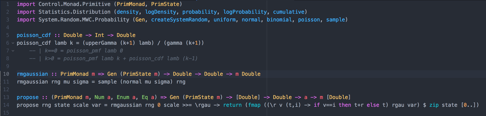

I am a scientist, in the more old school sense of investigating the natural world, as opposed to computer scientists and maybe mathematicians and statisticians (who in a modern and broader sense are so just as much). We traditionally must spend a lot of time reading about what is known of the systems we are interested in, and are trained in the scientific method to improve our knowledge of the world (without getting into how that works, except that I think anyone who claims to use the method should read Paul Feyerabend). We also need tools to do science, physical ones like the telescope of Galileo then (again, read Feyerabend) and modern microscopes today, as well conceptual ones like mathematics and statistics – which Richard Feynman called a box of tools. More recently it has become important (and sometimes essential) to learn how to use computer programming languages, but while most natural scientists have heard of the existence of computers most are not trained in coding at all.
My personal trajectory started in the physical sciences, later moving on to the life sciences. Having had presumably enough courses in the likes of calculus, linear algebra, quantum mechanics and thermodynamics, overall I considered myself a “quantitative” person, but even among the Fortran-coding physicists and chemists I barely got to see enough of that, C or Pascal (maybe like the Occitan of programming) to recognize code when I saw it. Only a few years later, shortly before starting my PhD, I thought I should to actually learn to program stuff, and at that point I basically had to do it from scratch and while I was already getting into some more serious research. This post is not about my path, it is about the process of any given natural scientist – let’s call introducing coding into scientific research, but it is also told from my own perspective and that of friends and colleagues around me, so I assume it differs from that of others.
Establishing the procedure
For whatever reason, at some point of their careers; any given natural scientist may be unable to use their favorite point-and-click statistics package, or may need to run a batch of analyses, or may decide that scripting them is an overall better way of doing things. They may pick up a language like Matlab (if someone around thought it was a good idea to spend that kind of money) or something free like R, maybe Python. They will suffer a little before being able to set up a script that works, and then things will seem to be working alright, something like this: load your formerly-excel-table csv file, get the formatting and metadata in the right format, apply a blackbox-like-package, maybe use a for-loop to repeat a similar analysis for different subsets of the data, export results to a suitable file format. (personally, somewhere around this point I had used some R, Stata, started learning some Python “for fun”, and then was compelled to learn Matlab, without being especially comfortable with any of them.) Despite the initial pain of getting that shit working, once it’s done all is well with the world; they reached the next level of analysis: their toolbox is immensely expanded, their analyses more reproducible, more open, and the pain of getting a script working decreases in the next months until it nearly disappears. At this point we have learned how to translate our analysis procedure to computer code; we’ve learned procedural programming.
Procedural programming makes sense to human beings in general because it is a series of instructions executed in order (1. load data, 2. apply a function to it, 3. save result), each one is a line or few lines representing something you want done to your data. As the natural scientist gets better this can become quite complex, with functions that can represent complex mathematical models describing differential equations, gaussian processes, Markov chains, or whatever else, but the general structure of the code is still intuitive. However, if like me they picked Python or some other general-purpose language, they may know the language syntax enough to peek into packages found in general repositories like GitHub, or R toolbases like Bioconductor, and they will find what looks like this giant spaghetti mess of incomplete code that refers to other classes in different files. It’s like a book in a language you know but without paragraphs, pages, sequential order, or any useful reading structure. Congratulations, they may just have had their first encounter with object-oriented programming, or OOP.
Orienting objects
Despite what their computer scientist friend may say, object-oriented programming makes does not make sense to human beings (I know that because I am one). That perception may change (or may not). in theory OOP is supposed to be a better paradigm than its procedural counterpart, preventing errors from propagating as the instructions are executed, or something. Instead of (1.) loading their data and (2.) applying a function like ANOVA or a GLM to it, they will create an object that (like 1.) contains their data as an attribute, and that object has methods, which (like 2.) are basically functions – there’s no longer your_data.csv itself, even displaying it is a method associated to that object or class of objects. If that doesn’t make sense to most people is because it probably doesn’t in general. OOPers will tell them that it does make sense because OOP models objects in the real world, and may describe programming a bicycle – “you don’t want to describe a procedure for riding a bike, instead you describe a bike object that has attributes like speed, current gear, etc, and methods like increase speed, change gear, etc”. They are probably right too; in some cases that could make more sense than describing a procedure, plus OOP is arguably what enabled organized modularity of large scale projects that would otherwise be unmaintainable. So if the natural scientist is committed to doing serious programming, or really wants to convert an amazing analysis pipeline into a package available to the public, the next step may be taking an online course on OOP, and maybe that will take them to the next level.
Scientist on computer, not computer scientist
I am not sure what is the proportion of scientists and from which areas go through which extent of the process I’m describing here, so I will just describe more or less how I experienced going through that last bit. It is all quite recent too, and cannot claim to be able to just go into any project of my interest in a familiar language and understand the guts of it, but I guess it takes more than mastering OOP to do that (and then again reading other people’s code is always a less-than-pleasant task, at least for me). Also, because I am not over this whole “phase”, I cannot really offer any “lessons” – not that this is my objective for this post. Object-oriented programming and features like encapsulation likely allowed me to program a couple of Java modules for Beast 2 without having to understanding every single aspect of the whole project. This is probably the time when a scientist like myself may want to go for a more “serious” compiled language like C++ (basically C that supports OOP) or Java (as opposed to scripting or interpreted languages like Python or Perl). I was actually more interested in the increased speed of compiled languages, since Python is a multi-paradigm language that supports procedural, object-oriented, as well as functional programming (I know, maybe we had enough with different paradigms, but that’s the last one I will mention). Although C++ seems to have been created to bring C to OOP, it is also multi-paradigm. Java on the other hand is the prototypical object-oriented language, and sometimes it seems to have disciples that are on a mission to evangelize programmers about the paradigm – don’t quote me on any of this; I’m not a programmer, just a scientist, but that’s an idea that is kind of out there. That is not what made me choose C++ over Java for future projects, but ultimately I am glad it turned out this way, and that seems the common theme of learning to program as a scientist: we just go along trying things out and seeing what works.
If you are a scientists without a lot of programming experience these last parts may seem too technical and somewhat confusing - I’d not only agree but still find them confusing myself. So we should probably back up a little and think about how far should we take this whole thing.
As scientists we are not trained for understanding how machine code works or how to develop software, just like most natural scientists are not mathematicians; they may need to know some algebra and calculus for biophysics but do not need to be experts in Riemannian manifolds. I’ve come to a split where on the one hand I considered learning OOP for real, and implementing and implementing projects of my own or contributing to others, and on the other hand thinking that the way software development seems to work (ubiquitously under OOP) is not how I think about my research at all: a large part of my work consists of applying mathematical and statistical models to experimental data; programming with whatever paradigm doesn’t come in until I have to translate that so a computer can do that work. Going to much into things like OOP could be a waste of my time and feels more like learning tensor calculus than vector multiplication (granted that personally I have interest in both, but that’s besides the point). I would rather program in a way that is analogous to the way I formulate my scientific questions.
On top of it all, OOP has been accused of not delivering on its promises, and instead sweeping the dirt under the skeletons in the closet, and maybe procedural was the best paradigm all along. Well, I’m not trained to opine on that, maybe it is, maybe it’s not, or maybe there are other options. To paraphrase a smart guy: the great thing about the best paradigm is that there are so many of them to choose from.
Functional approaches
Enter functional programming, well, at least I think so. I’m not going much into its definitions, but the general idea is to treat computation as the evaluation of mathematical expressions, without assigning values to arbitrary variables like in procedural programming, or creating objects to represent those values. It focuses on actions rather than objects, “verbs” instead of “nouns” as some put it. To me that makes more intuitive sense and may be a good way to become more serious about the code I write while still being able to make sense of how it is implemented; plus I’m probably doing it in mostly-functional style anyway, otherwise contaminated by procedural and object-oriented code.
Is functional better than object-oriented? Is procedural actually still better? I don’t think I care that much at this point. What I am convinced of is that I should first use programming to correctly solve my scientific demands, and only second decide whether learning a proper style is interesting for me.
In any case I decided to learn (myself a) Haskell (for great good, I could say). Multi-paradigm languages like Python, Julia (a new interesting language designed for scientific computing), and even C++ support functional programming, but Haskell is purely functional so there is no way around the paradigm, no cheating (to be completely honest, all paradigms contain some procedural code to make it run in the first place) and it is constructed with mathematical functions at heart so it is supposed to flow like math in a lot of ways. Nevertheless Haskell’s “purity” can be annoyingly inflexible to the point of being unmathematical in some specific instances, but I’m not yet sure it is a practical language for my purposes, so for now it’s more of an exercise, while most serious work will get done in the previous three languages.
Conclusion
So to conclude, programming is this new(ish) cool thing scientists should be using or are told they should, but it’s unlikely that they will devote more than the time necessary to get their shit done, and that will vary with the sophistication of their computational framework, just like their mathematical and statistical knowledge will vary with the sophistication of their formal quantitative description. That probably applies to methods more broadly than math and programming too, it is always a matter of balancing the experimental demand with methodological expertise. Likely they will lag the actual level required for the cutting edge of analyses, but scientists do what they can with the resources they have, and it is entirely possible to err on the side of excess instead and become a methodological fetishist (but if that’s your thing, good for you).
Wherever you are down this path, chances are if you’re doing your job with the box of tools you have, you can start slowly but steadily improving on it in whatever front, and if you can find the interest to do it you will end up with a different box of tools. Like that geeky-funny-inspiring story from Richard Feynman.
-- caetano,
July 30, 2018